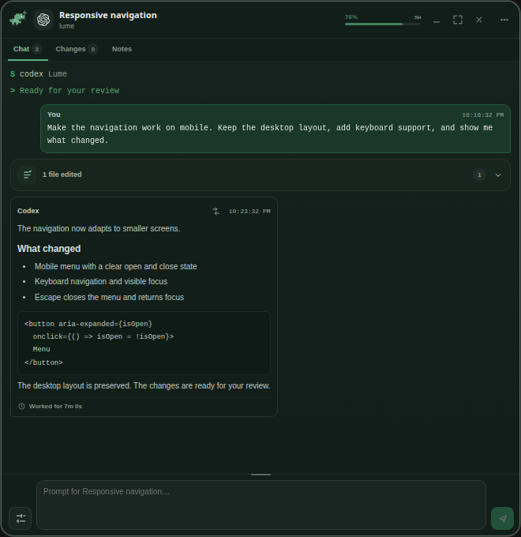
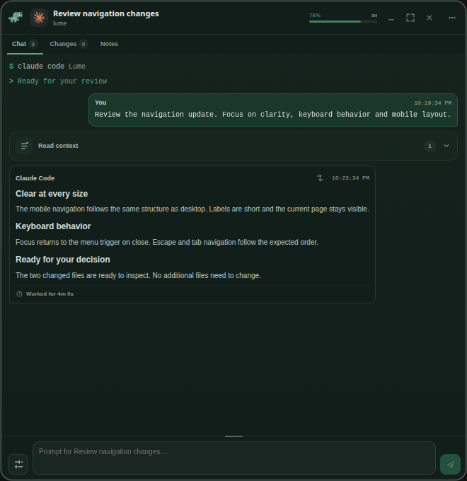
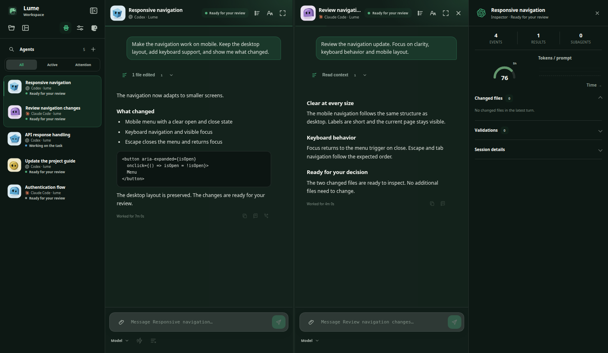

Your agents.Your way.
A local monitor for AI agents.
A full Workspace. A discreet Orb.
The choice is yours.
Windows · Linux
Orb.
Small by choice.
Stay with your work. Lume stays in the corner, keeping an eye on every agent.
Open the Orb to see what needs you. Give each conversation its own terminal. Arrange them, dock them, make the space yours.


Independent conversations.
One shared view of the work.
Workspace.
Room to think.
Bring the same agents into one focused workspace.
Keep conversations side by side. Follow their progress, inspect the context, and review what changed — with everything in view.

Your agents already
have a home here.
Follow existing sessions or start them from Lume.
Available controls adapt to the connected agent.
Your tools.
Your machines.
A wider view.
Lume’s next chapter connects the work around your agents — and the machines behind them.
In developmentGitHub, Jira and distributed execution follow the project’s documented roadmap.
Compute stays with you.
Node is the background service on a paired machine. Its current first phase provides identity, pairing and read-only health. Remote agent execution and encrypted Relay transport are being developed.
The distributed roadmapMake room
for your agents.
Start with a little presence.
Make it your workspace.
No Lume account required for local use. Your agents keep their own provider connections. Remote access is optional.
Privacy